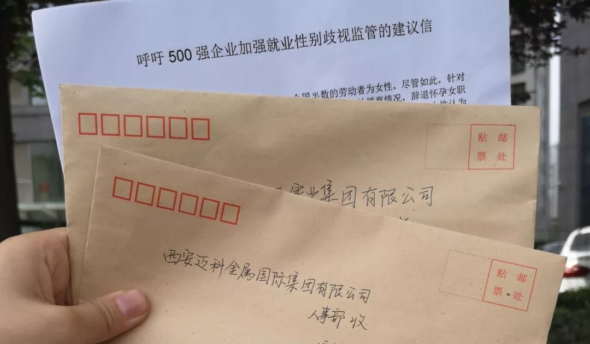
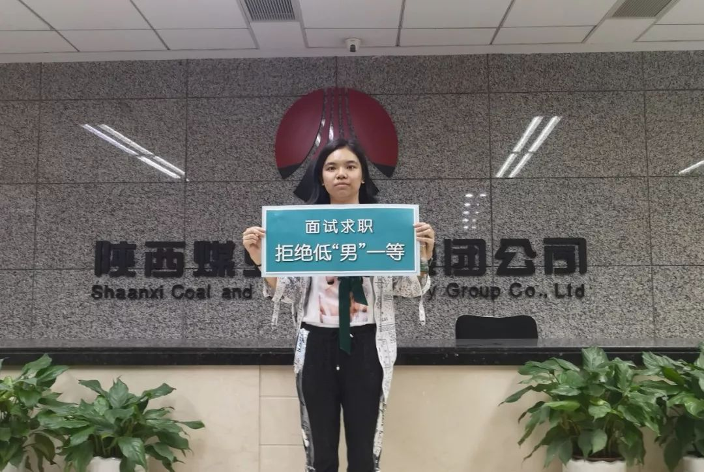
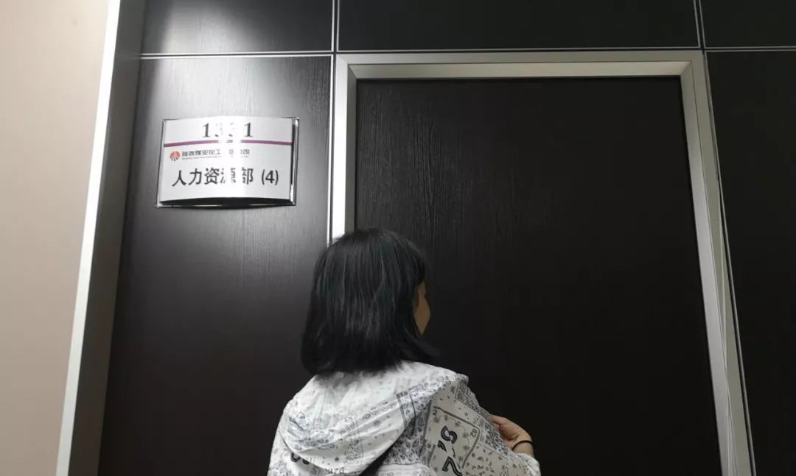
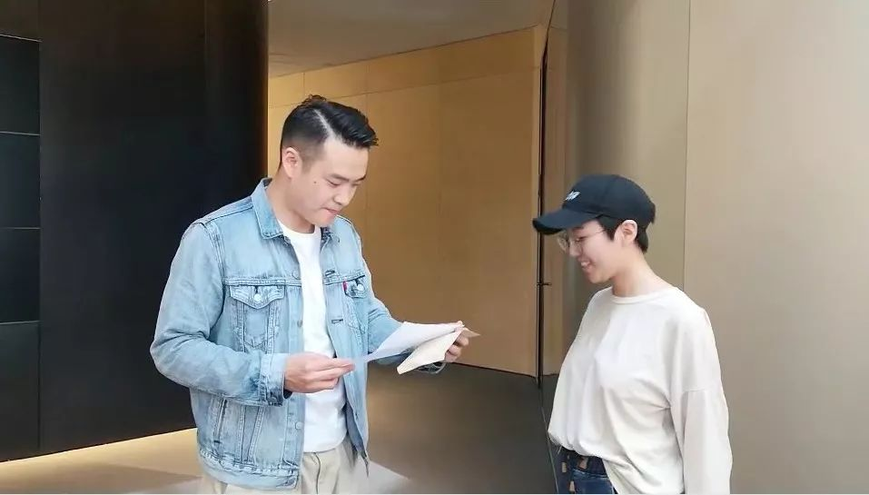

呼吁就业性别平等，拒绝低“男”一等|劳动节该做啥？

今天是5月1日，我们国家正式庆祝的第七十个劳动节。
要怎么庆祝这个特殊的劳动节呢？西安两位女大学生赵梦莹和谷雨荍用实际行动向500强企业、向社会发出呼吁：我们需要就业性别平等，女性拒绝在职场上低“男”一等！（文末获取建议信）
戳视频，看女大学生喊话500强企业
4月30日，劳动节前夕，赵梦莹和谷雨荍拜访了2家500强企业——陕西煤业化工集团有限责任公司（简称：陕煤公司）和西安迈科金属国际集团有限公司（简称：迈科公司）。她们递交了一份关于加强就业性别歧视监管的建议信。这两家企业态度良好地接收了信，遗憾的是，他们没有明确回复是否会采纳建议。
雨荍看了许多关于女性就业的新闻，“我会担心面试的时候会遭遇歧视。被问是否已婚、是否会生孩子、是否会要二胎，我该怎么回答？我希望自己以后就业时，能够被平等的对待。”
梦莹回想起递交信的过程，“工作人员跟我们说了谢谢，有时我会觉得是我们麻烦了他们。但是女性面临的歧视更是一个大麻烦，谁会感到抱歉呢？”

梦莹和雨荍认为企业需要正视女性的劳动价值，给予女性事业发展的空间。企业也是社会的一部分，有其要履行的社会责任。全国500强企业更应该起带头作用。她们希望500强企业可以承诺加强对就业性别歧视的监管，并公布企业会采取的措施。

雨荍在陕西煤业化工集团有限责任公司前
4月30日，天气晴朗，我们怀着忐忑的心情踏上寄信的路途。到达前，我们设想了很多场景，最担心的就是被拒绝甚至被赶出来。印象中企业的形象是傲慢的，与我们这种普通大学生之间有很大的隔阂。这种想象让我感到很紧张。
从学校出发，坐了一个多小时的公交车，我们先到达的是陕煤分公司，前台工作人员建议我们去总公司。我以为他们是在委婉地拒绝我们的请求，不禁有点泄气。在梦莹的鼓励下，我们决定继续去寻找总公司。从4楼的陕煤总公司，到15楼的人力资源部，又经过两间办公室，我们终于见到人力资源部的负责人。陕煤公司的工作人员夸赞了这个活动的想法，表示一定会参考我们的建议，共同努力。

建议信交给陕煤公司人力资源部的负责人
原先，我认为寄信行动的形式大于效果。这次的实际行动让我有一种真正参与发声的感觉。这次的经历让我对就业环境的改善更为乐观。陕煤公司的工作人员问：“你们是不是应届大学生？”难道要等到毕业的时候再行动吗？会太晚吧。我相信只要大家都为此努力，哪怕是像这样贡献一些微小的力量也一定会有效果！

梦莹在陕西煤业化工集团有限责任公司前
上个周六，4月28号，我和雨荍约好去西安的六家500强企业递交建议信。天气突然降温，早上下了大雨，特别冷，中午雨变小后，我们才出门。我们准备好了信，打算到迈科公司再买信封。没有想到到处都是办公楼的地方，竟然找不到文具店。迈科公司是在一个脖子仰断了才能看完整的写字楼黎。因为没有准备好建议信，也因为胆怯，我们决定把这次当做踩点，下一周再来。
4月30日中午，我和雨荍再次出发。一开始没找到陕煤总公司，反而是到了迈科公司附近。于是，我们决定先去迈科公司。递交建议信时，我们十分忐忑，害怕被赶出去。没想到迈科公司工作人员的态度很好，他们接到信后立刻拆开阅读，还带我们走到公司logo处拍照，和我们拍视频。我跟收建议信的高先生说：“希望你们可以认真地看这封信。”那个时候，我很开心。

梦莹（右）和迈科公司收建议信的高先生（左）
根据陕煤分公司的指引，我们来到的是工商银行和税务大厅。我们不禁产生疑惑是不是被骗了？问了很多人后，我们终于把信交给了陕煤总公司。按原先计划，我们今天要去六家公司。耗时近六小时，我们只去了两家。只是去两家公司寄信这样的小事，为什么我这么累？疲惫地返回学校，不过很有成就感，因为我做了自己觉得有意义的事。╰(*´︶`*)╯
虽然这两家企业接收了建议信，但“不拒绝、会考虑”的态度却十分委婉、模糊。我们期待这两家企业认真地看完建议信后，给予我们确切的回复，以实际行动做出承诺。
这几天，我们会把建议信寄给陕西的其它500强企业。大家也可以向全国500强企业邮寄建议信，呼吁更多的企业关注就业性别歧视。
大家若发现企业存在就业性别歧视，可以通过私信告诉我们，会有小伙伴向政府部门举报。我们也会继续监测500强企业的歧视状况。
1、在招聘录用过程中，不以性别为由，限制女性就业或提升女性的录用标准；
2、在招聘录用过程中，不询问妇女婚育情况，不将限制生育作为录用条件；
3、在劳动关系存续期间，不因婚育情况辞退女性，或限制女性晋升；
4、建立性别友善的工作氛围，如确保同工同酬、保障女性的职业技能提升机会、禁止性骚扰等。
《呼吁500强企业加强就业性别歧视监管的建议信》完整版获取方法：
1、扫描以下二维码；
2、请点击“阅读原文”。
-打赏支持寄信费-